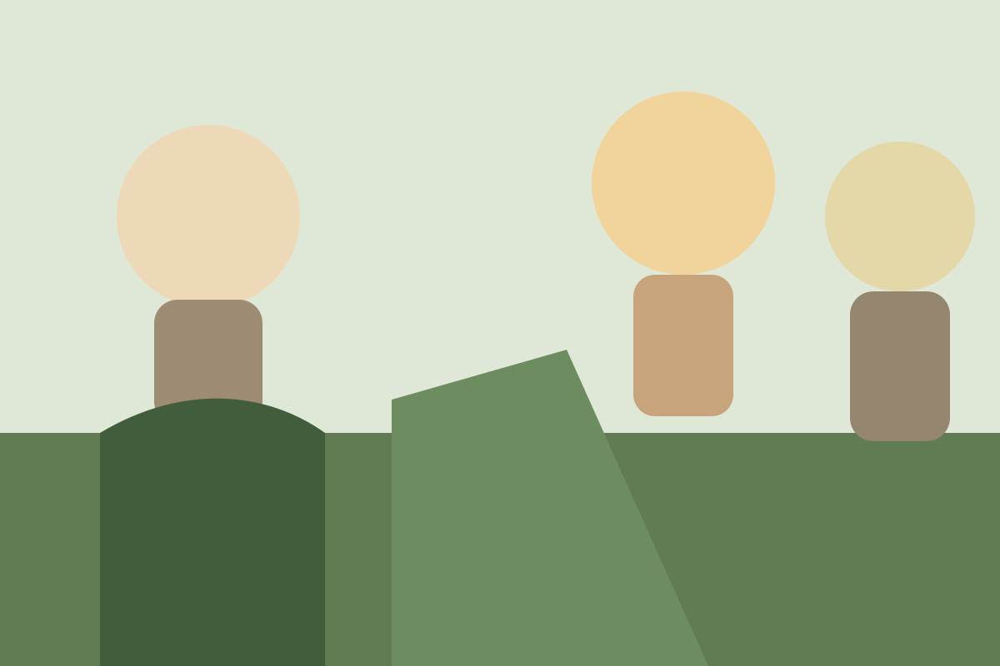

Protecting wildlife and habitats
Supporting conservation efforts for endangered species and fragile landscapes.
Read moreCameroon • biodiversity • communities
SURUDEV works at the intersection of biodiversity conservation, climate resilience, and local livelihoods—helping communities protect landscapes while creating practical opportunities for everyday life.
Who we are
SURUDEV is a Cameroonian non-profit organization working to restore degraded ecosystems, protect biodiversity, and improve local livelihoods through sustainable agriculture, environmental education, and practical community action.
Its work is shaped by the idea that long-term environmental protection must also create food security, opportunity, and resilience for the people who live alongside forests and landscapes every day.

Our areas of work
Supporting conservation efforts for endangered species and fragile landscapes.
Read moreWorking with communities to revive forests, soils, and productive landscapes.
Read moreImproving food security and rural income through agro-ecological methods.
Read moreBuilding adaptive practices that support people and landscapes under pressure.
Read moreGrowing awareness through learning, community engagement, and research.
Read moreFeatured impact story
Restoring landscapes while creating sustainable livelihoods for the people who depend on them.
From degraded forest edges to family farms and community knowledge systems, SURUDEV links environmental recovery to practical everyday opportunities.
ECo-village approach
SURUDEV’s eco-village and demonstration work brings together sustainable agriculture, agroecology, aquaculture, tree nursery systems, and community training in one practical model.

Field voices

Field perspective
SURUDEV is grounded in the realities of local communities, where conservation and livelihoods are deeply connected.
Latest stories

How local action is helping protect the ecosystems on which communities depend.
Read moreLocal farmers and gardeners are building systems that restore soil and strengthen livelihoods.
Read more
Building understanding from the classroom to the community.
Read moreLet’s build solutions that last.
Organizations, supporters, researchers, volunteers, and communities can all play a role in protecting ecosystems and building resilient livelihoods.